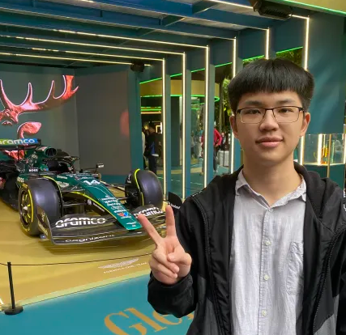
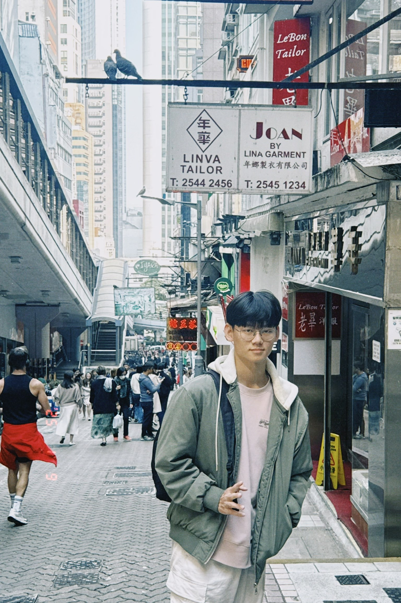
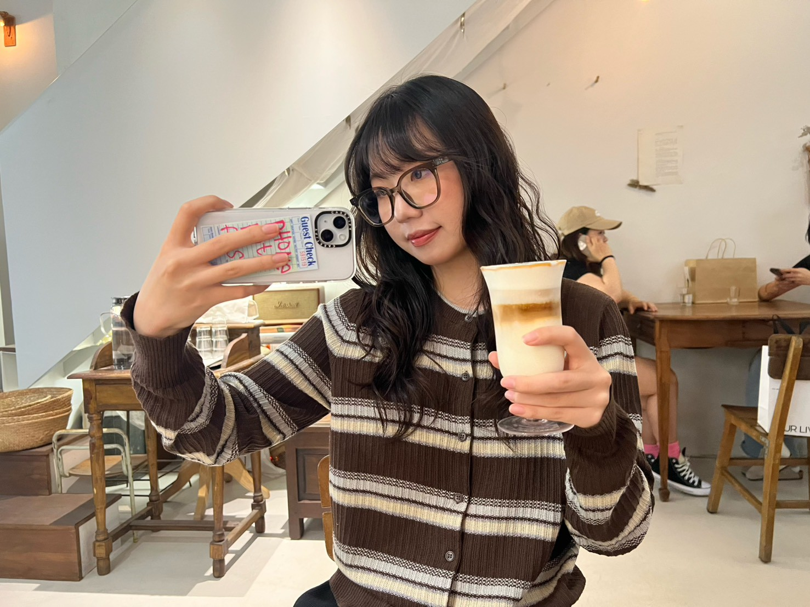
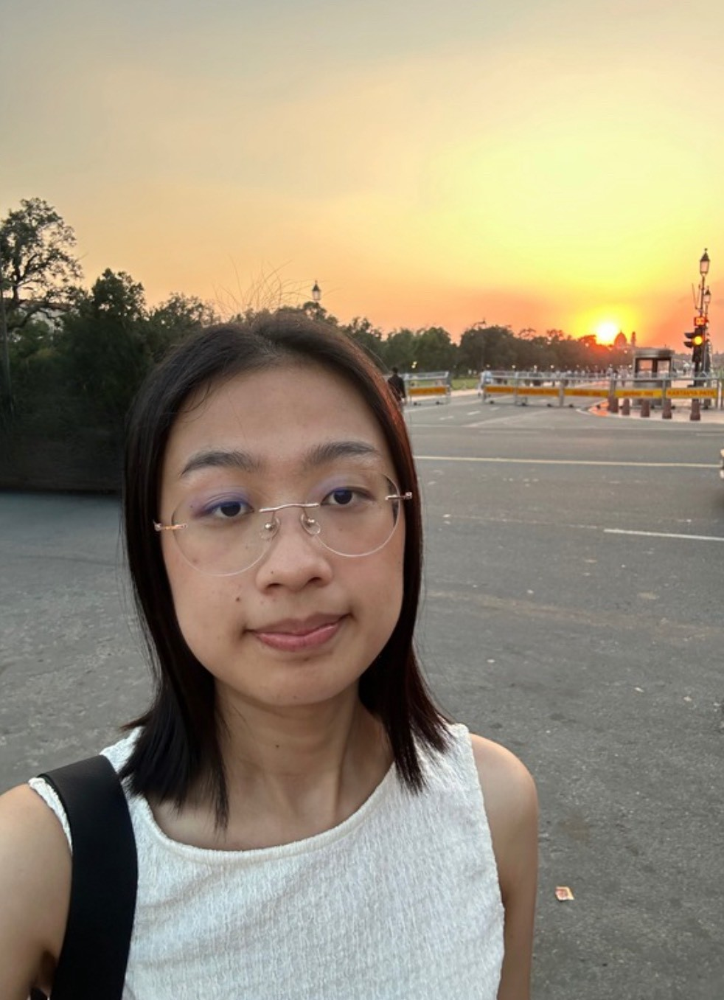
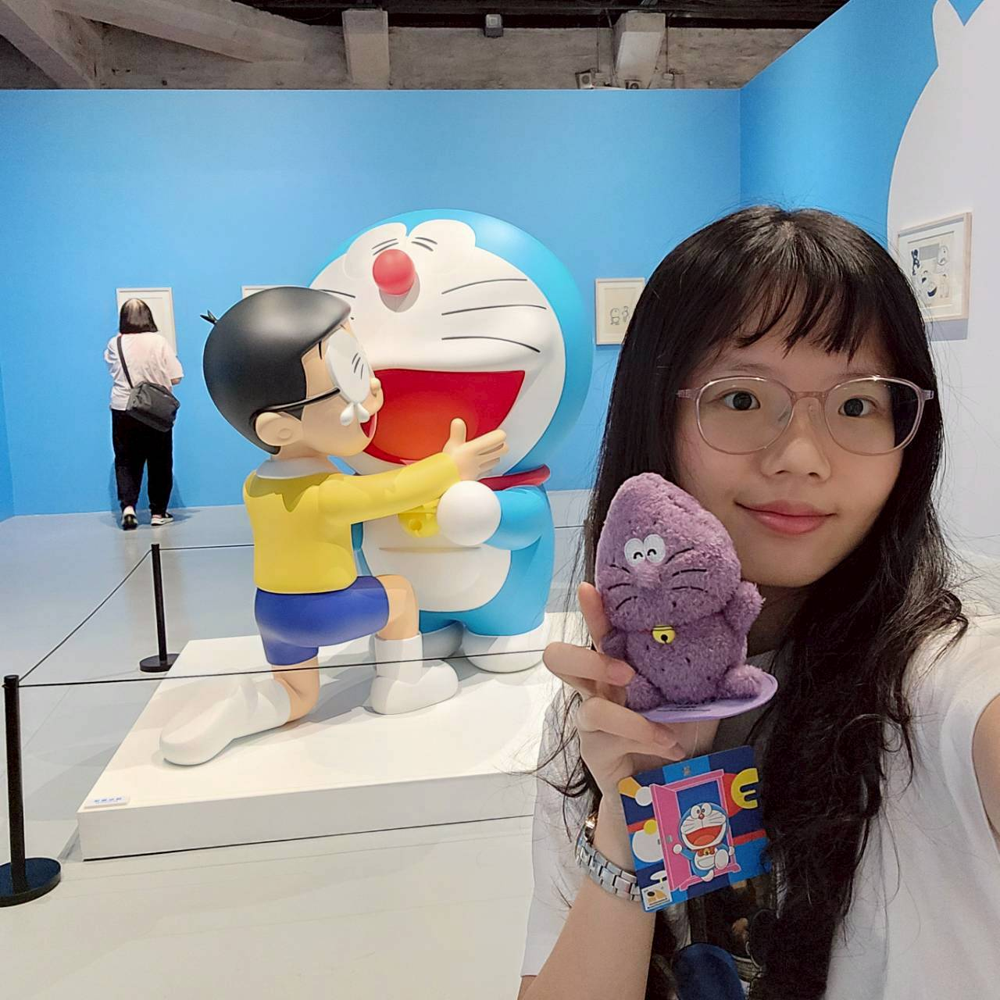
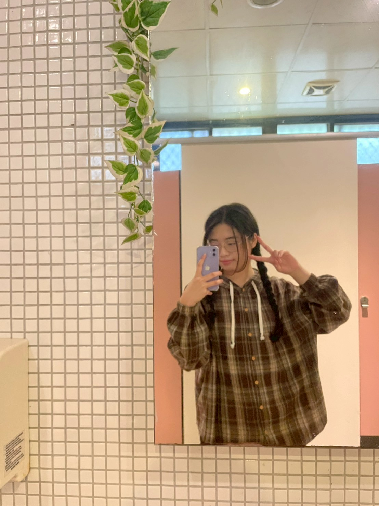
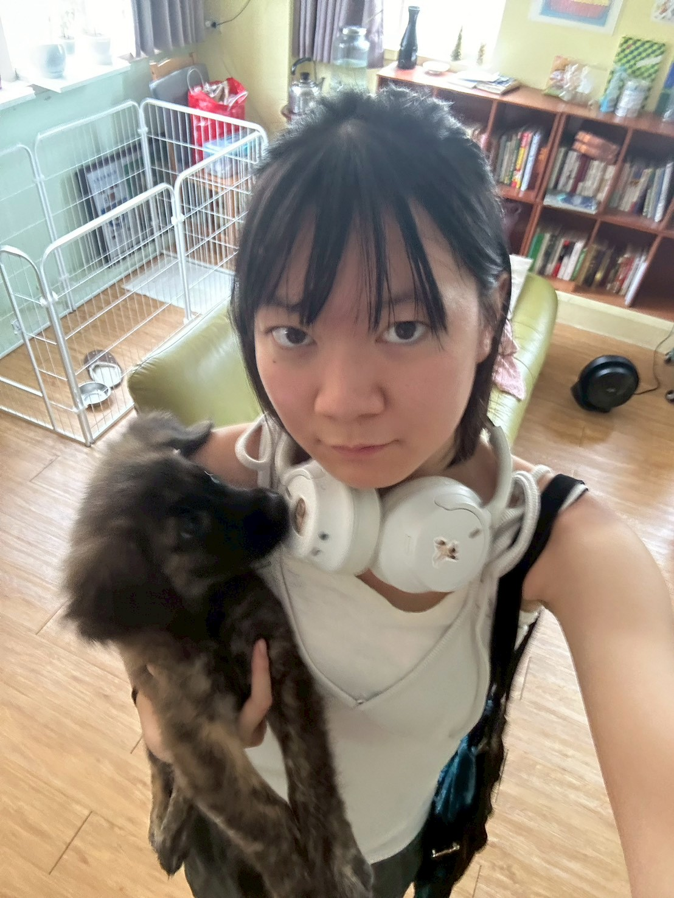
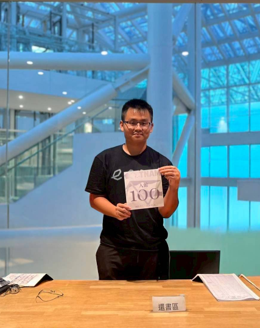
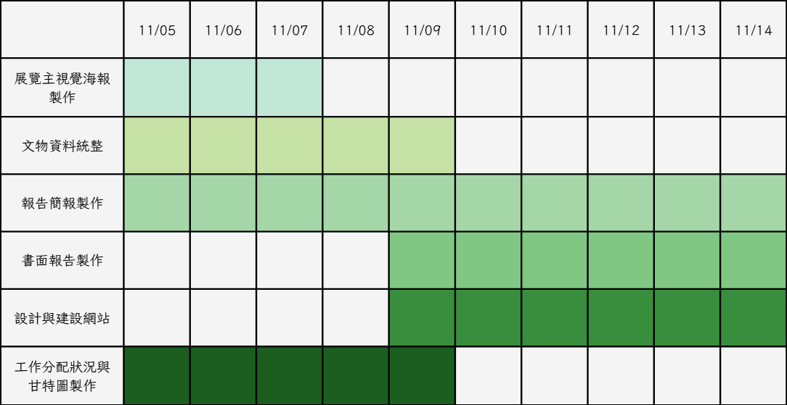

策展團隊

詹博宇
資訊工程學系116級
學號：41247061S
工作內容：期中明清茶文化撰寫與報告
期末網站架設、小組報告
喜好茶種：蘋果汁+雪碧=蘋果西打

林冠弘
資訊工程學系116級
學號：41247003S
工作內容：期中明清茶文化撰寫與報告
期末網站架設、小組報告
喜好茶種：巧克力可可碎片星冰樂
董沛知
地球科學系118級
學號：41444021S
工作內容：期中報告美編與工作進度甘特圖製作、
期末報告美編、工作分配狀況及工作進度甘特圖製作
喜好茶種：布蕾香紅奶茶

陳紫彤
教育心理與輔導學系117級
學號：41301007E
工作內容：期中唐宋茶器簡報製作
期末主視覺海報
喜好茶種：伯爵茶

方筠云
臺科應用外語系
學號：A11417005
工作內容：期中策展理念與主題、設計概念說明
期末明朝文物、活動/最新消息展覽內容
喜好茶種：宇治抹茶歐蕾

林家伃
台大資訊工程學系
學號：B11902055
工作內容：期中唐代煮茶與宋代點茶內容與報告
期末唐代煮茶與宋代點茶展廳內容、報告主題介紹
喜好茶種：台茶18號(紅玉)

楊芸綺
資訊工程學系117級
學號：41347002S
工作內容：期中茶文化文獻蒐集與簡報
期末主視覺海報、期末茶與文人詩畫內容
喜好茶種：小山園抹茶拿鐵

曾巧蘋
台師大美術學系
學號：41060009T
工作內容：期中唐宋茶盞資料蒐集整理
期末茶盞與茶色展廳文物內容
喜好茶種：穀蕎麥茶

高頂軒
歷史學系118級
學號：41422016L
工作內容：期中展覽內容（架構、特色、目標客群）
期末清朝文物
喜好茶種：霧社高山烏龍茶
工作進度甘特圖
